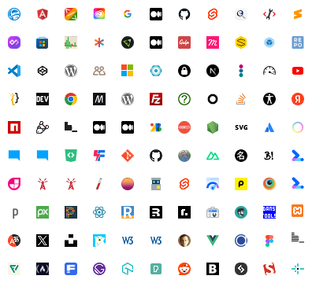

Начало и Ресурсы
Языки и Нативные API
HTML Разметка
Официальная документация 🧙♂️
Основы
Лучшие практики 👍
- Советы по созданию подзаголовков, о элементе hgroup и мое видео на тему
CSS Верстка
Официальная документация 🧙♂️
Основы
Флексбокс (Flexbox Layout)
Гриды (Grid Layout)
Лучшие практики 👍
Веб-шрифты
Типографика 🗛
Основы
Вариативные шрифты
JavaScript
Основы
Лучшие практики 👍
Бэкенд
Языки/платформы
Локальные серверы и LAMP сборки
💡 LAMP/WAMP - это набор из сервера, базы данных и языка бэкэнда для упрощения локального тестирования.
Серверы
CMS
Инструменты и Тестирование
Софт
Общее
💡 Установите все доступные на вашей ОС основные браузеры (Chrome, Firefox, Safari). Если есть и на смартфон/планшет.
Редакторы кода
Макеты
Инструменты
Главное ✔️
- Валидатор от w3c (может проверять HTML и CSS)
- Проверка поддержки фич браузером
Инструменты разработчика
Онлайн-тесты
Онлайн редактор кода + результат
Другое
💡 Для онлайн подбора цвета погуглите "color picker"
Тестирование на разных устройствах
Основы
Практика
💡 Также можете погуглить установку MacOS на виртуальную машину
Производительность
Основы
Практика
Безопасность
Доступность
Теория
Практика
Архитектура и Сборка
Система контроля версий Git
Основы
Ответы на вопросы
Методология БЭМ
Основы
Ответы на вопросы
💡 Конкретные БЭМ инстурменты могли устареть, но сами принципы методологии по-прежнему могут помочь избежать многих проблем
Сборка
Общее
Менеджеры пакетов
- Менеджер пакетов npm (идет вместе сNode.js) и документация
-
Менеджер пакетов RubyGems для Jekyll и
 документация
документация
Терминалы
- Что такое терминал от Доки и от MDN (вопреки советам там, вам не обязательно использовать bash:)
- Шпаргалка по командам Linux bash
- Шпаргалка командам Windows cmd/powershell
- Расширение clink для cmd
- Windows Terminal
- Подборка терминалов
Автоматизация 🤖
Линтеры ☑️
Быть в курсе
Новости, статьи и подборки
Фиды и подписки
Новости и дайджесты
- Фронтенд дайджест Frontend Focus
- JavaScript дайджест JavaScript Weekly
- Дайджест Fresh Frontend Links
- Дайджест от Smashing Magazine
- Дайджест css-weekly
Дайджест инстурментов WebToolsWeekly идругие дайджесты от автора
Дайджест от Николая Шабалина
- Подборка новостей от подкаста Веб-стандарты
- Дайджест Frontend Status
Статьи и гайды
💡 Вы можете найти больше новостей, погуглив "frontend news" или "новости фротенда"
Видео
Найти ответы на вопросы и задать их самому
На эти сайты часто можно попасть, погуглив какую-то задачу:
- Stackoverflow (русская версия)
- Хабр Q&A
- Тематические сабреддиты (учтите, что значительная часть постов и комментов - ai боты)
- Комментарии на хабре
Другое
Планирование и организация работы
SEO верстка
Дизайн
Текст
Другое
💡 На сайтах по всем ссылкам часто можно найти и другие полезные материалы. Не ленитесь их изучить!
НЕ рекомендуемые источники
Устаревшее
- htmlbook.ru
- webref.ru
Сомнительное качество
Все, что вам выдает AI
- w3schools.com и перевод html5css.ru
- geeksforgeeks.com
- SEO-сайты, сгенерированные ai/ботами и авто переводы
- Ответы mail.ru, Дзен и другие непрофильные сайты
С осторожностью
- Корпоративные блоги (есть хорошие, есть не очень)
- Википедия (только неспорные темы)
- Мнения в интернете
💡 Относитесь критически к любой информации)
Продвинутые темы
Фреймворки
Основы
💡 Осторожно: переводы могут не успевать за официальной документацией и устаревать!
SSR + CSR

React Nextjs и перевод- React Remix
- Astro
- Vue Nuxt
- Svelte Kit
- Angular Universal